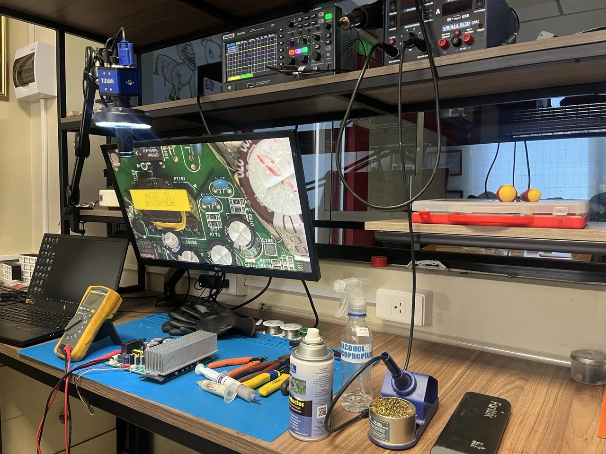
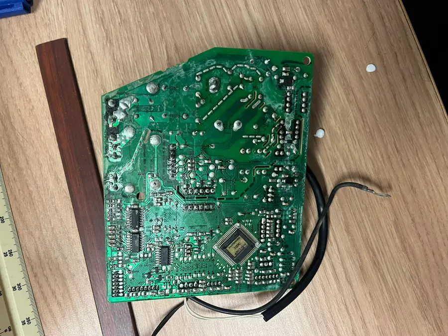
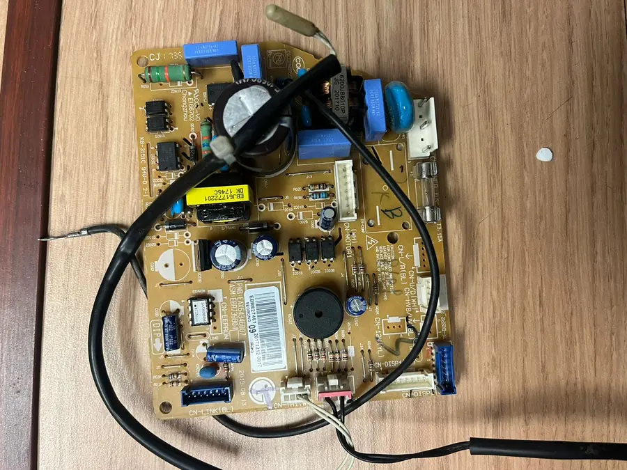
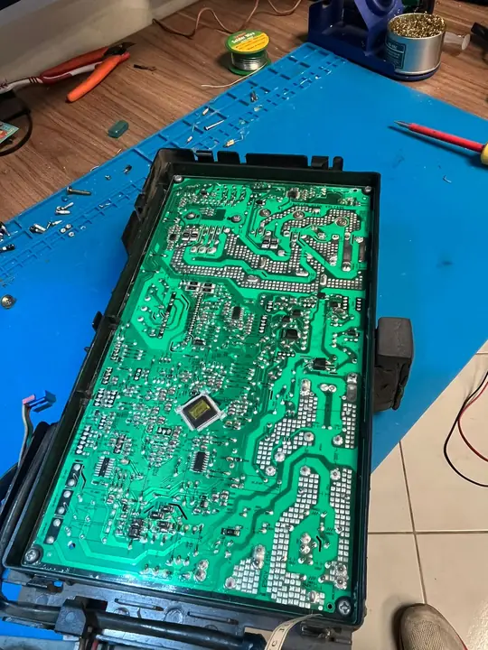
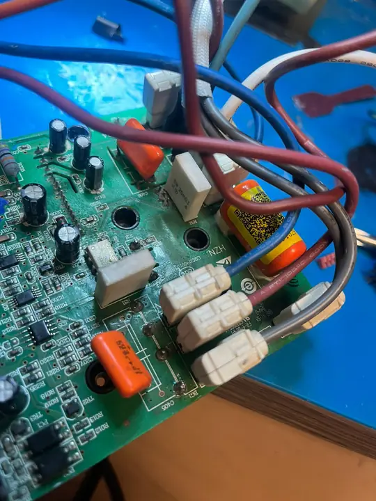
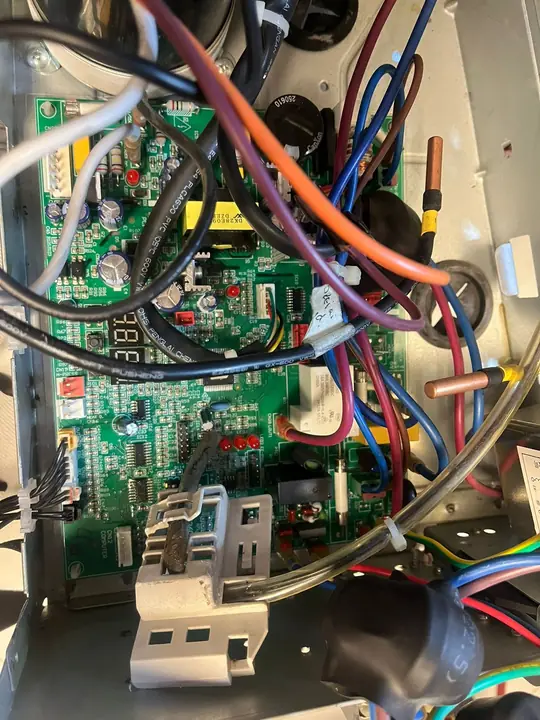
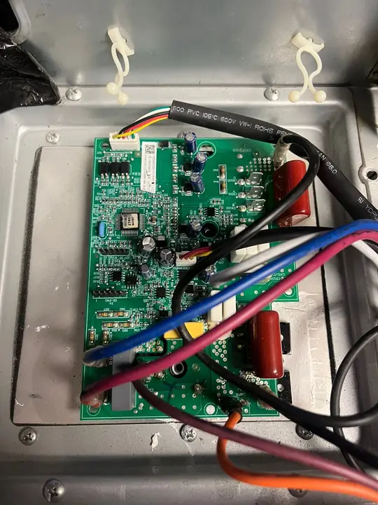
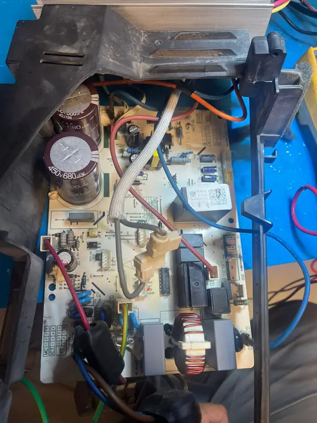
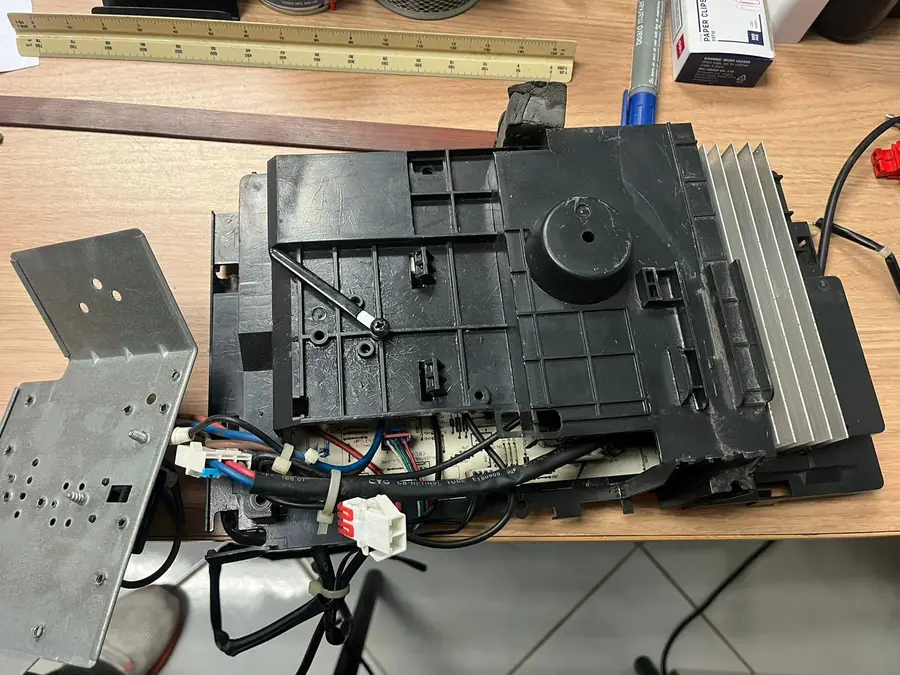

Error de comunicación
Fallas entre unidad interior y exterior, líneas invertidas, contactos o señales alteradas.
Diagnóstico y reparación de tarjetas electrónicas para aires acondicionados inverter. Soluciones técnicas para fallas de comunicación, IPM, fuentes, ventiladores, sensores, errores de compresor y más.

Antes de reemplazar una tarjeta completa, es importante identificar si la falla está en la fuente, comunicación, sensores, etapa de potencia o componentes asociados.
Fallas entre unidad interior y exterior, líneas invertidas, contactos o señales alteradas.
Revisión de entrada AC, fusibles, fuente primaria, reguladores y protección.
Análisis de errores relacionados con IPM, bus DC, señales de control y protección.
Diagnóstico de motores, salidas de control, alimentación, sensores Hall o retorno de señal.
Se revisa si el fusible abrió por protección o si existe un corto en la tarjeta.
Reparación de fuentes conmutadas, voltajes bajos, oscilaciones o ausencia de salida.
Revisión de módulos de potencia, señales de disparo, alimentación y líneas de protección.
Verificación de sensores, conectores, referencias, señales y valores fuera de rango.
Trabajamos con diagnóstico técnico para encontrar la causa real de la falla y evitar reemplazos innecesarios de tarjetas o módulos.
Evaluación de etapas, voltajes, señales, comunicación y condiciones de protección.
Revisión de display, control, sensores, comunicación, relés, fuentes y salidas.
Diagnóstico de potencia, bus DC, IPM, ventiladores, comunicación y protecciones.
Verificación técnica de etapa de potencia, alimentación, señales y posibles cortos.
Reparación de fuentes dañadas, voltajes inestables, arranque intermitente o protección.
Análisis de comunicación entre tarjetas, display, control y señales de referencia.
Puedes enviar tu tarjeta inverter por Servientrega desde cualquier ciudad de Ecuador. Escríbenos por WhatsApp para indicarte cómo empacarla y qué información incluir.
De preferencia, trae o envía la tarjeta con su display y control si aplica. Esto ayuda a realizar pruebas más completas, especialmente en fallas de comunicación, sensores o unidad interior.
Ejemplos de tarjetas electrónicas de aires acondicionados inverter revisadas por RC Solutions: unidades interiores, exteriores, fuentes, módulos de potencia, sensores y comunicación.








¿Tienes una tarjeta similar? Puedes traerla a nuestro taller o enviarla desde cualquier ciudad del Ecuador por Servientrega para diagnóstico técnico.
Consultar por WhatsAppNos enfocamos en electrónica de climatización inverter, con revisión técnica antes de reemplazar piezas. El objetivo es darte un diagnóstico claro y una solución confiable.
Evaluación de la falla con análisis de etapas y componentes, no solo cambio de piezas.
Trabajo especializado en tarjetas de aires acondicionados inverter y sus fallas frecuentes.
Comunicación clara por WhatsApp para coordinar diagnóstico, entrega o envío nacional.
Revisión enfocada en causa raíz: fuente, IPM, sensores, comunicación o protección.
Un proceso simple para que sepas qué hacer antes de traer o enviar tu tarjeta inverter.
Recibimos en Guayaquil o por Servientrega desde cualquier ciudad del país.
Revisamos alimentación, comunicación, IPM, sensores, ventiladores y componentes críticos.
Te explicamos la causa probable, la solución técnica y el alcance de la reparación.
Realizamos la reparación y pruebas necesarias antes de la entrega o devolución.
Escríbenos por WhatsApp para coordinar el diagnóstico. También recibimos tarjetas inverter de todo Ecuador por Servientrega.
Solicitar diagnóstico por WhatsApp